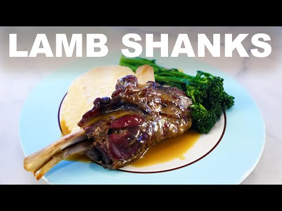

Easy Lamb Shanks

Description
Lamb shank is a tough cut from the lamb leg that becomes tender and juicy with slow and low cooking. The foreshank comes from the front legs and is smaller than the hind shank, which comes from the back legs and is much meatier. As with all hard-working muscles, lamb shank is full of connective tissue and collagen that requires stewing or braising. The lamb shank is typically sold cut, with the center bone intact, and is cooked on the bone with little prep required.
Because lamb shank requires long cooking times and a lot of patience, it is an inexpensive cut of lamb that is often overlooked compared to more easily grilled neighboring cuts. This makes lamb shank an affordable option for cooks who enjoy lamb, but avoid it due to the high price compared to other red meat such as beef and pork.
Follow this easy recipe to have a wonderful and delicious dinner at a low cost and minimal effort.
Ingredients
- 4 lamb shanks
- 6 potatos
- Butter
- Bunch of broccolini
- Salt
- Black pepper
- Cumin
- Milk
- Hoisin sauce
Steps
- Heat oven to 120 degrees celcius.
- Season each lamb shank generously with salt, pepper and cumin.
- Wrap each lamb shank individually in foil along with a few cloves of garlic and a drizzle of extra virgin olive oil. Place the wrapped shanks in the oven and leave for around 4 hours.
- Peel potatos and boil in water until potatos are soft and can be easily pierced with a chopstick
- Pour out the water and then mash the potatos inside the pot with a potato masher. Once the potatos are slightly mashed, add a few nobs of butter and salt and keep mashing until butter is mixed properly. Add milk to the potatos until desired consistency is achieved. Scoop onto plate and grind pepper on the potatos.
- Boil broccolini in salted water for around 3 minutes, strain and then plate next to the potatos with a drizzle of hoisin sauce
- When the Lamb shanks are ready strain all the roasting juices into a saucepan along with the now soft garlic and deglaze with some white wine. THis will form the jus.
- While making the jus keep the lamb shanks in the oven and turn the temperature to maximum to brown and crispen the exterior of the lamb shanks. This adds great texture and complexity of flavor.
- When jus is done, plate lamb shanks and pour jus onto shanks when serving.